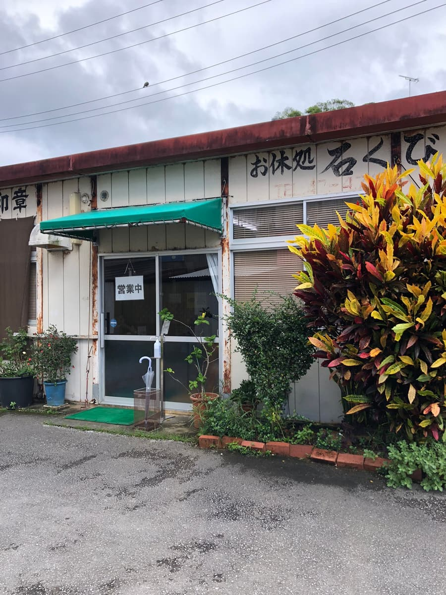
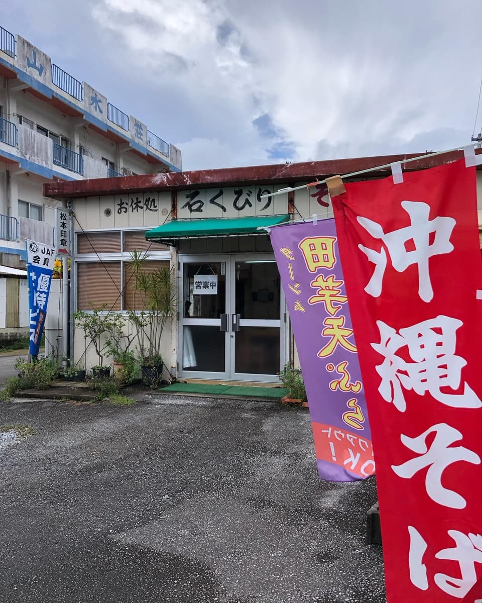
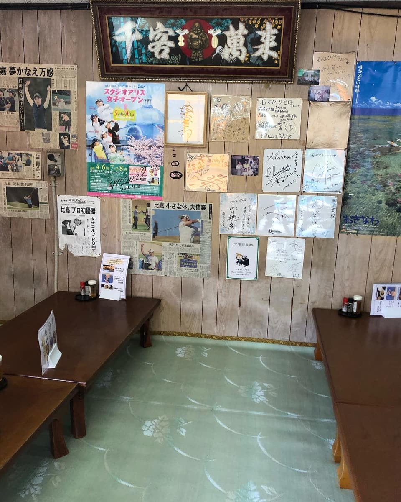
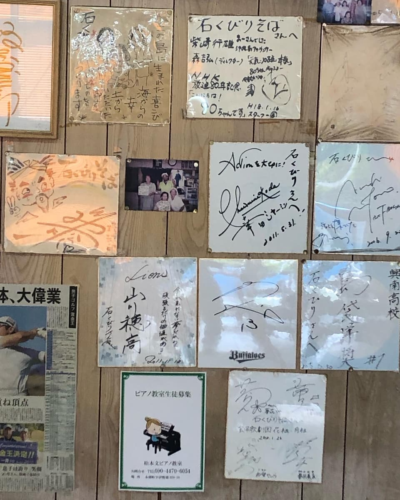
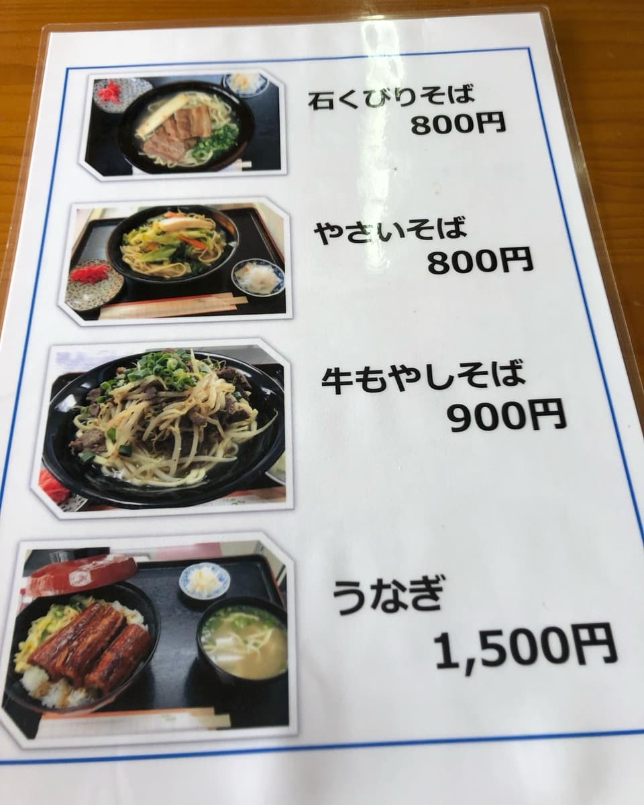
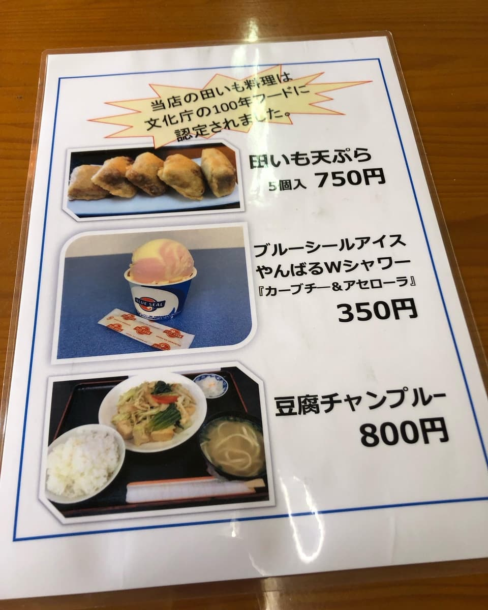
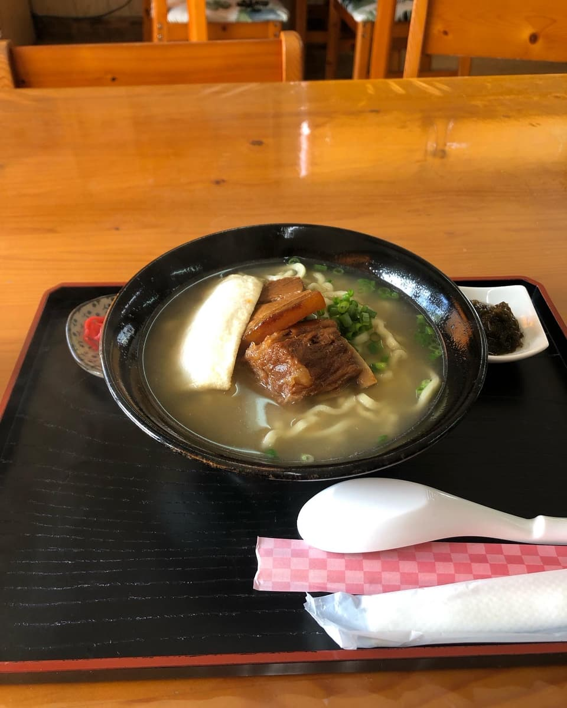
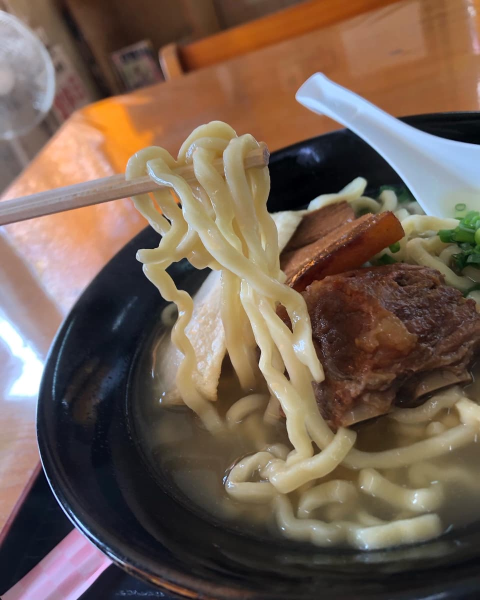

*This article was created with AI (ChatGPT-4o), with some additions of my own lol
I went to eat here in September 2024😄
On my Okinawa soba rounds, I visited "Ishikubiri" in Aza Higashi, Motobu Town. Using an afternoon of hourly leave, I came to this shop with an atmosphere just like a Showa-era diner. Even the exterior is well-worn, with a somehow nostalgic feel. It's a shop you can tell at a glance is loved by locals😊


When you step inside, celebrity autographs and newspaper articles covering an entire wall jump out at you, and you can tell it's a popular shop rooted in the community. There's also tatami seating, and it's a relaxed space as if you were at home✨




The menu has not only "Ishikubiri soba" but also "vegetable soba," "beef and bean sprout soba," and even "eel," so there's plenty of variety. But here, of course, I tried ordering the "Ishikubiri soba" bearing the shop's name. The price is a reasonable ¥800 too, and my excitement grew while I waited.

And out came the "Ishikubiri soba"🍜. First, when I took a sip of the broth, the pork bone comes through firmly, and the saltiness felt strong too. However, since it's a bit on the salty side, people watching their salt might find it a little heavy.

The noodles are medium-thick with a chewy texture, and they have such springiness that it makes you think, maybe they're house-made? These noodles that grab the broth well are very satisfying and very delicious👍 What especially moved me was the "fish cake (kamaboko)" topping! This fish cake has without a doubt the No.1 chewiness of all the Okinawa soba shops I've eaten at, and it surprised me into thinking, "Was kamaboko always this delicious?" Fish cake, which I don't usually pay much attention to, has a star-level presence here🌟
The soft-bone pork ribs (nankotsu soki) and bone-in pork ribs (hon-soki) are also well seasoned through, and the umami of the meat spreads out. However, some slightly sinewy parts remain, so people looking for tenderness might mind that.
Rating (9/15): Just plain tasty😄 I thought the noodles and fish cake in particular were high-level. I thought the deliciousness of the fish cake is hard to find elsewhere, so why not give it a try once? As expected of a shop on the Okinawa Soba Kaido😄
Noodles: ★★★✬☆（3.5）
Soup: ★★★☆☆（3）
Toppings: ★★★✬☆（3.5）（※かまぼこに対して）